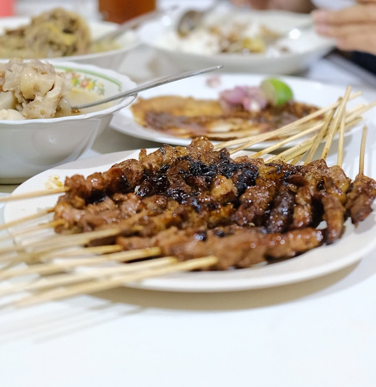

Sate Ayam

A traditional and easily found dish in Indonesia is Sate Ayam, which
consists of grilled chicken skewers served with peanut sauce. The term
‘Sate’ is believed to have originated from the Tamil word ‘catai’, meaning
‘flesh’, suggesting that Javanese street vendors developed this dish as an
adaptation of Indian kebabs. In West Sumatra, a popular variant called
Sate Padang features grilled beef skewers served with a distinctive spicy
Minang sauce. Sate Ayam is simple to prepare, with all ingredients readily
available at your local store.
Ingredients
- 1 pound of chicken thighs, finely chopped into pieces
- ¾ teaspoon of salt
- A pinch of ground white pepper
- A tablespoon of sunflower seed oil
- 24 wooden skewers
Peanut Sauce
- 1 cup of water
- 5 tablespoons of peanut butter
- 2 tablespoons of sweet soy sauce
- A tablespoon of palm sugar
- 2 cloves of garlic, minced
- ½ teaspoon of salt
- A tablespoon of lime juice
How to Make
-
Mix the chicken thighs, 3/4 teaspoon of salt, white pepper, and
sunflower seed oil in a large bowl, then cover and refrigerate for 1-2
hours
-
Make preparations to grill and soak the wooden skewers in water so they
don’t burn during cooking
-
Blend water, peanut butter, sweet soy sauce, brown sugar, garlic, and
1/2 teaspoon salt in a small saucepan and bring to a boil
- Stir well
- Remove from heat and add some lime juice
-
Thread the marinated chicken onto the skewers and put three pieces of
meat per stick
- Put the well-blended peanut sauce in a small bowl and set aside
- Then brush the sauce over the chicken
-
Heat a grill pan or a large skillet and put the chicken skewers in
batches on the pan or the skillet
-
Cook until the chicken meat turns brown, approximately 1 to 2 minutes
per side
- Serve warm.
Reference:
Indonesia Travel (Wonderful Indonesia), AI Tools